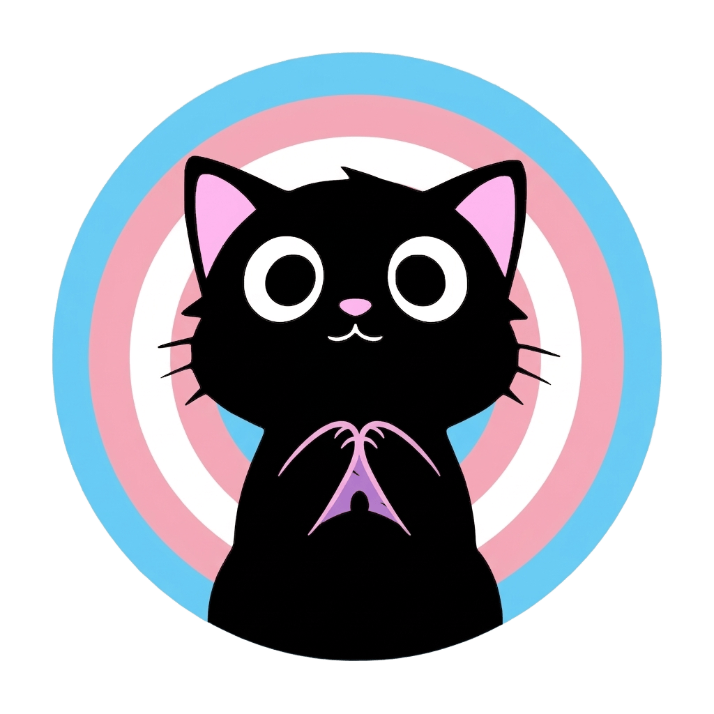
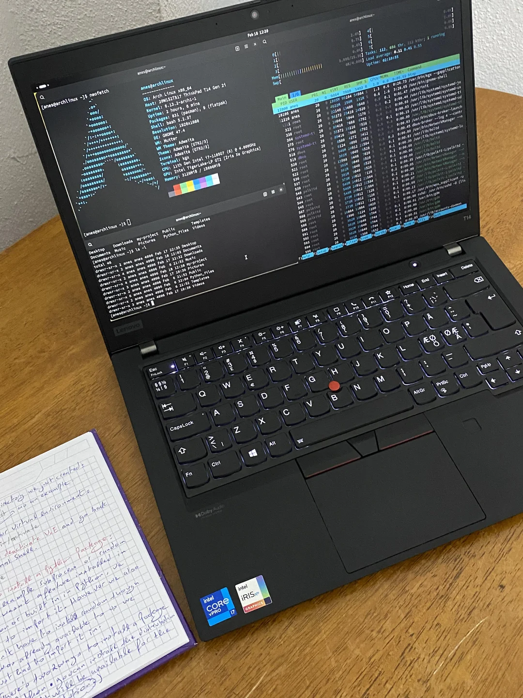

Mi Historia
Soy una chica trans de 19 años, llegue de Chile hace dos años a Buenos Aires, una de las mejores decisiones que tome, me encanta este pais. Actualmente estudio Ciencias de la Computación en la facultad de Exactas de la UBA y me apasiona entender como funcionan las cosas desde la raiz
Mis planes a futuro incluyen seguir construyendo mis habilidades en este rubro que amo que es la informatica, me encanta saber todo sobre pcs es una hiperfijacion mia desde que soy niña supongo que por el #autismo, aprendi a armarlas y desarmarlas a los 12 y de ahi en adelante no he podido dejar de investigar, "jugar" a desarmar mis computadoras porque si, solo para experimentar, romper cosas del sistema para ver que pasa y etc... obvio en algun momento queme algun equipo mio... pero bueno, yo creo que se aprende rompiendo, si nunca rompo nada es que no estoy aprendiendo

Mi amada PC
Mi bebé, mi adorada herramienta para estudiar y trabajar... ah y obvio el lugar donde tengo a todos mis amigos
Es una maravilla, aunque la compre usada, una thinkpad t14 de generacion 2 con un procesador i5 1145G7 con 500gb de nmve es todo lo que necesito para jugar y estudiar comoda, no se que haria sin mi precioso bebé

Gracias por darte el tiempo de leer esta parte, besitos!